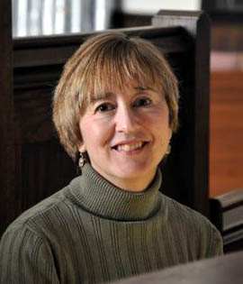

Helen Hofmeister Hawley
June 24, 2012

Helen Hofmeister Hawley received her carillon instruction at the University of Kansas as a student of Albert Gerken. She is a carillonneur member of the GCNA (Guild of Carillonneurs in North America) and is a past member of the board. Currently, she is a member of the Exam Committee of that organization. She has performed carillon recitals in fifteen states as well as Belgium and the Netherlands. She represented the GCNA with a recital at the World Carillon Congress at St. Rombouts in Mechelen, Belgium, and played a Congress recital at the Iowa State Congress in Ames, Iowa. In Grand Rapids, she has practice privileges on the two carillons at Grand Valley State University where Julianne Vanden Wyngaard is University Carillonneur.
Helen holds both her Bachelor and Master of Music degrees in organ performance from the University of Kansas and has done post-graduate study in Cologne, Germany as a recipient of the Deutscher Akademischer Austauschdienst (DAAD) scholarship. She is an active member of the Grand Rapids AGO (American Guild of Organists) and is on the state board of the ACDA (American Choral Directors Association). She currently serves as Minister of Music at Westminster Presbyterian Church, Grand Rapids, Michigan, where she directs the adult choir, the high school choir, the middle school choir, and is the principal organist. In addition, she oversees the entire music program there which also includes three children's choirs, a wind ensemble and a string ensemble.